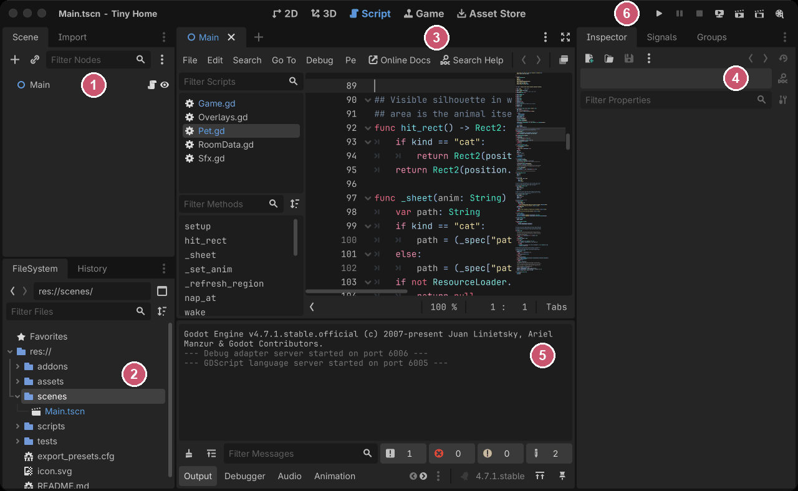

Part one
Godot is a small idea repeated until it becomes a game engine. Three chapters: the idea, the language, and the handful of settings that decide whether your pixels look like pixels.
Chapter one
Everything in Godot is a node in a tree. Once that sentence stops being a slogan and starts being how you actually picture your game, the engine gets much easier.
A node is a small object that does one thing. Sprite2D draws a texture. Camera2D decides what you see. Timer counts down. AudioStreamPlayer makes a noise. There are a few hundred of them and you will use perhaps thirty.
You do not usually make a big object that can do many things. You make a node that has children, and the children do the things. A character is not one class with a sprite field and a sound field — it is a node with a sprite child and an audio child. This is composition, and Godot pushes you toward it hard enough that fighting it is always a mistake.
Nodes are arranged in exactly one tree, and the tree is the game. A node's position is relative to its parent's, so moving a parent moves everything under it. Deleting a parent deletes the lot. Drawing order follows the tree, top to bottom, unless you say otherwise.
Two things follow from that which trip people up. First, get_parent() and get_node("../Something") work, but a node that reaches upward is a node that can only ever live in one place — so signals (below) are usually better. Second, a node is only "in the tree" once it has been added; before that, get_tree() returns null and half the engine is unavailable to it. That is what _ready() is for.
This is the part that reads oddly if you come from other engines. A .tscn file is a branch of the tree, saved. That is all it is.
There is no separate concept of a prefab, a level, a widget and a game object — a player, a bullet, a whole world and a single button are all "a scene", and any scene can be instanced inside any other. A scene used once is what other engines call a level. The same scene instanced two hundred times is what they call a prefab. Godot does not distinguish, and that is a genuine simplification once you trust it.
Tiny Home has exactly one .tscn, holding one node with one script. Everything else is built in code with Node.new() and add_child(). That is unusual, and Chapter 4 argues both sides of it. Mentioning it here so you know that when you see it, it is a choice and not the norm.
A signal is an announcement. The node that emits it does not know or care who is connected. This is the single most important habit to build, because it is what stops your code turning into a web of nodes reaching across the tree for each other.
# in Player.gd — announces, knows nothing about who cares signal arrived func _process(delta: float) -> void: if reached_the_target: arrived.emit()
# in Main.gd — cares, and says so once # _player already holds a reference to the player node func _ready() -> void: _player.arrived.connect(_on_player_arrived)
In this game that one signal is what makes furniture work: tapping a chair queues an action, the resident walks over, and the action fires when arrived lands. The player script has no idea that chairs exist.
An autoload is a script or scene that Godot instances once, at startup, at the root of the tree — so it is reachable from anywhere by name. It is Godot's answer to a singleton.
They are genuinely useful and genuinely easy to abuse. The rule worth keeping: an autoload should own something the whole game needs and nothing else should be allowed to touch. This game has two — Game (all mutable state, and every rule that changes it) and Sfx (audio). Everything else that looks global is a plain script with a class_name, which makes it addressable as a type without making it a living object.
State lives in an autoload. Authored content lives in a class_name script full of constants. In this game: if it changes while you play, it is in Game; if somebody typed it, it is in RoomData, StoryData or one of their siblings. You can find anything in the project with that one rule.
Godot's editor is four docks and a viewport, and you can ignore most of it for a long time.

Godot 4.7.1 with this project open. Unedited, markers added afterwards.
Main.tscn, and everything else in the game is built under it at runtime.print() lands here, and so do errors. Keep it open; a silent failure in Godot is usually a line in this panel nobody looked at.| Where | What it is for |
|---|---|
| Scene dock (top left) | The tree of the scene you are editing. Add nodes here. |
| FileSystem (bottom left) | Your project's files. Drag a PNG into the viewport and it becomes a Sprite2D. |
| Inspector (right) | Every property of the selected node. This is where 90% of engine features actually live. |
| Output / Debugger (bottom) | print() lands here, and so do errors. Keep it open. |
| Project → Project Settings | Rendering, input map, window size. Chapter 3 is mostly about this dialogue. |
F5 runs the project, F6 runs just the scene you are looking at. F6 is the one that makes iteration fast: build a scene, run only it, fix it, repeat.
Chapter two
Python-shaped, indentation-scoped, and built specifically for driving a scene tree. If you have written any scripting language you can read it already; the value is in the parts that are Godot-specific.
## Doc comment: two hashes, and it shows up in the editor's help. class_name Player # optional: makes this a global type extends Node2D # required: what kind of node this is signal arrived # announcements this node can make const SPEED := 280.0 # fixed for all time @export var friendly := true # editable in the Inspector var _target: Vector2 # leading underscore = "mine, do not touch" @onready var _sprite: Sprite2D = $Sprite2D # resolved when ready func _ready() -> void: pass func walk_to(p: Vector2) -> void: _target = p
Three things to notice. := means "infer the type and fix it" — var x := 5 is an int forever. @export puts a variable in the Inspector, which is how you make a script configurable without hard-coding. $Sprite2D is shorthand for get_node("Sprite2D"), and @onready delays evaluating the variable's initial value until just before _ready() runs. An instanced scene already has its children before it enters the SceneTree, and get_node() can find them then.
| Callback | When | Use it for |
|---|---|---|
_ready() | Once, when the node and all its children are in the tree | Wiring, building, connecting signals |
_process(delta) | Every rendered frame | Anything visual. delta is seconds since the last frame; use it to calculate movement over time rather than per frame, so movement is frame-rate independent here too |
_physics_process(delta) | At a fixed rate: 60 times a second by default, adjustable in Project Settings | Physics bodies, and logic that needs to run in step with physics |
_input(event) | For every input, before the UI | Rarely. Usually too early |
_unhandled_input(event) | Only if the UI did not consume it | World input. This is the one you want |
_draw() | When the node is told to redraw | Custom drawing. Call queue_redraw() to trigger it |
_unhandled_input versus _input is worth internalising early: put world input in _unhandled_input and clicking a button will stop also moving your character, for free.
GDScript is optionally typed. Godot compiles typed code to faster bytecode, catches whole categories of mistake before you run, and gives the editor enough information to autocomplete properly.
The game in this book types every one of its 435 function returns. That is not discipline for its own sake — untyped code in a project with no editor state means a typo becomes a runtime error somewhere else entirely, half a minute after you started the game.
# Fine, but the editor can help you with none of it func find(id): return table[id] # Now a wrong call is an error before you run func find(id: String) -> Dictionary: return table.get(id, {})
Each of these produced a confident wrong answer while this game was being built. They are the ones nobody warns you about.
var got := false signal_thing.connect(func(): got = true) # ... later: `got` is STILL false. The lambda changed a copy. var flag := [false] # an Array is a reference signal_thing.connect(func(): flag[0] = true) # this works
This one is vicious because it makes working code look broken. It caused a perfectly good pathfinding system to be rewritten twice.
SomeRefCounted.new().run() # prints its first line, then vanishes forever
The moment run() hits an await, the function suspends. Nothing holds a reference to the object, so it is freed, and the coroutine never resumes — silently, with no error. Either keep a reference in a variable that outlives it, or make the thing a Node and add_child() it. This game's test suite is a Node for exactly this reason.
for i in n counts from zerofor i in 8: # i is 0,1,2,3,4,5,6,7 — not 1..8 dot.lit = i < done # so this is `<`, and `<=` lights one too many
Obvious written down; less obvious at 11pm when your progress dots are one ahead of reality.
var x := [0.35, 0.15, 0.4][i] # Error: cannot infer the type var x: float = [0.35, 0.15, 0.4][i] # fine
An untyped Array yields Variant, and := refuses to infer from a Variant. The same applies to state["key"]. Annotate explicitly and move on.
class_name is registered by the editor, not by the fileWrite a script outside Godot — from a terminal, an external editor, a script — and its class_name does not exist until the project is re-imported. Referring to it fails with "Identifier not declared", which reads like a typo rather than a stale cache. Either re-import, or use preload("res://path.gd"), which never depends on the registry.
nullif node != null: # a reference can remain non-null after deletion pass if is_instance_valid(node): # false only once the node is actually freed pass if is_instance_valid(node) and not node.is_queued_for_deletion(): # also excludes nodes waiting to be freed pass
queue_free() queues deletion for the end of the frame; it does not free the node immediately. Until deletion happens, both node != null and is_instance_valid(node) can be true. If you must not start new work on a node waiting to be freed, check not node.is_queued_for_deletion() too, after checking validity.
Anywhere you await and then touch a node afterwards, this matters — the thing may have been freed while you were suspended.
await suspends a function until a signal fires. It is how you write "do this, wait for that, then carry on" without callbacks:
await get_tree().process_frame # wait one frame await get_tree().create_timer(0.5).timeout # wait half a second await some_node.animation_finished
Waiting one frame is more useful than it sounds. Godot's UI containers do not report their real size until they have been laid out once, so code that measures a panel has to wait a frame first. That single line is the difference between every card in this game working and every card being invisible — Chapter 6 tells that story.
Chapter three
Five settings. Get them wrong and your art is soft, shimmering, or subtly the wrong size — and none of it is obvious from a screenshot until somebody points at it.
| Setting | Set it to | What goes wrong otherwise |
|---|---|---|
rendering/textures/canvas_textures/default_texture_filter |
Nearest | Godot blends between texels, so every pixel becomes a small gradient. This is the one everybody finds first, because it is unmissable. |
rendering/2d/snap/snap_2d_transforms_to_pixel |
On | A sprite sitting at x = 40.5 gets drawn across two columns of screen pixels. Standing still it looks fine; walking, it shimmers. |
display/window/stretch/mode |
canvas_items (usually) | viewport renders everything at your design resolution and scales the result — crisper for sprites, but it renders your UI text at that low resolution too, and makes tweens jagged. |
display/window/stretch/scale_mode |
integer | Fractional scaling makes some pixels bigger than others. Measured in this project at a 900×1500 window: a canvas scale of 1.116. With integer it is exactly 1.000 and the game letterboxes instead. |
| Sprite scales, in your own code | Whole numbers only | A sprite at scale 1.5 has some source pixels covering two screen pixels and some covering one. It reads as "slightly broken" without ever looking obviously wrong. |
Snapping was off, and six hand-rolled .round() calls were doing the job unevenly. Scaling was fractional, so every pixel in the game was being resampled at 1.116× whenever the window was not exactly 768×1344. Both are one line in project.godot, and neither is visible until you go looking with a measurement rather than an eye.
A pixel font imported with the defaults comes out grey and mushy, because Godot antialiases and hints it like a normal typeface. In the Import dock, for the font file, set:
antialiasing = 0 # None hinting = 0 # None subpixel_positioning = 1 # Disabled
Then pick sizes that are whole multiples of the font's design size. The face this game uses has a 10-pixel em box, so its sizes are 20, 30 and 40 — at those, every glyph is an exact 2×, 3× or 4× of what the designer drew.
Drop a PNG into your project folder from a terminal and Godot may not have imported it yet: load() can return null and the sprite can render as nothing at all, but the failed resource load also produces an error message in Output / Debugger. Run godot --headless --path . --import once, or just focus the editor window, which triggers a scan.